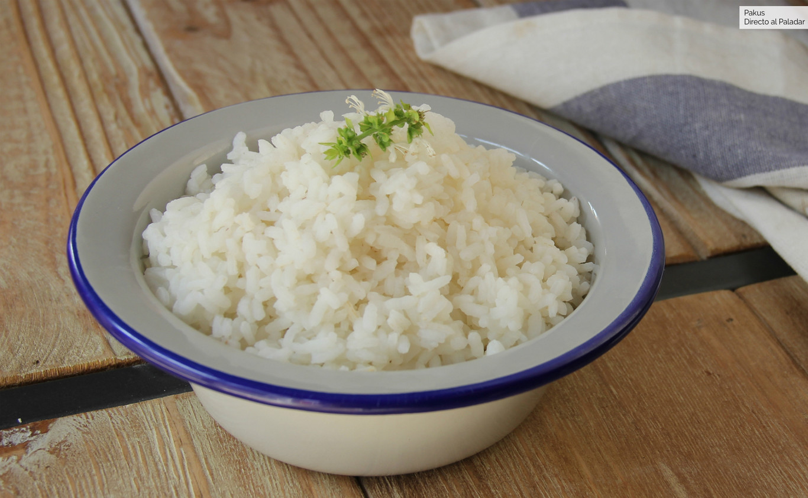
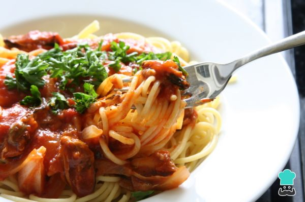

arroz
materiales:
-olla -taza -arroz -agua hirviendo
dependiendo de ara cuantas personas quieras alimentar llena una taza con arros y pondo en la olla con un poco de aceite y unos pocos minutos pone el doble de tazas en agua ponle sal a gusto y revuelve a fuego minimo por unos 20 minutos aproximadamente o hasta que este cocido
fideos con salsa
materiales
una bolsa de fideos -dos bolsitas de salsa de tomate -un paquete de salchichas -sal -oregano -aceite -un litro de agua
poner a hervir agua le agregas sal a gusto y una pisca de sal, una vez hierva poner a cocinar los fideos, cuando esto esten listos nesecitas colarlos y poner a cocer las salchichas junto con la salsa de tomate y finalmente cuando estas esten listas se mezclan las salchichas y los fideos y agregarles el oregano
